Open the Study Hub login, enter your approved UNE email, and this note will unlock automatically.
OMK 2 · Cardio · Week 14Pediatric Cardiology
Pediatric Cardiology · Central Maine Medical Center · OMK 2 · 2026
Pediatric Cardiology
A general pediatrician's practical tour: where to listen and how to grade a murmur, the 95 % that are innocent, when to refer, the congenital lesions behind the other 5 %, fainting, arrhythmias, and the lecture's cases on HCM, Kawasaki disease, pericardial effusion and endocarditis.
LecturerDavid Baker, DO
Slides byJim Foster, MD
Sources147 slides + transcript
Topics13
Labeled figures87
Exam questions31
Videos31
Orientation
"Murmurs are very common in children, but heart disease is not"
Listen Like a Pediatrician
Dr. David Baker, DO, is a general pediatrician from Central Maine Medical Center (CMMC). He taught from slides written by Dr. Jim Foster. His approach is practical: what you will actually hear and decide with a stethoscope on a child. You do not have to name the exact lesion. Your job is to decide innocent or refer. The final diagnosis is made by the cardiologist with a 2D echocardiogram with colour-flow Doppler.
How to read the coloursRed bold = lecturer emphasisBlue bold = key factYellow = number to memoriseBoard add-on = AMBOSS / board sources, not said in lecture
AbbreviationsCMMC = Central Maine Medical Center · 2D echo = two-dimensional echocardiogram (heart ultrasound) · Doppler = ultrasound mode that shows the speed and direction of blood flow · LO = learning objective · VSD = ventricular septal defect · BAV = bicuspid aortic valve
The six learning objectives
Auscultation landmarks and grading of murmursWhere each valve is heard and the I–VI scale → Topic 1
Innocent vs structural murmursThe 95 % that are harmless, and the lesions that aren't → Topics 2, 4–6
When to refer to a pediatric cardiologist→ Topic 3
Pediatric syncope→ Topic 7
Conduction and arrhythmias in children→ Topics 8–9
Cardiomyopathies and pericarditisPlus the lecture's Kawasaki and endocarditis cases → Topics 10–13
🔑 His closing summary — the whole lecture in six lines
Where is it loudest? Right upper sternal border → aortic · left upper → pulmonic · left lower → tricuspid / VSD · apex → mitral.
Systolic or diastolic?A diastolic murmur is always pathologic.
Continuous murmur under the clavicle that changes with position → most likely a venous hum (normal).
Murmurs can be normal in high-output states: fever, illness, anemia.
Fainting with a prodrome (nausea, lightheadedness, pallor) → vasovagal. Sudden fainting, especially with sports, is abnormal.
The most common pathologic lesions today: VSD and bicuspid aortic valve. "The more you listen, the better you'll get."
Start here — watch before reading
🎬 Watch — optional reinforcement; nothing loads until you click
Fig P1Where to listen: aortic valve 2nd–3rd right interspace · pulmonic 2nd–3rd left · tricuspid left lower sternal border · mitral at the apexPediatric Cardiology lecture · slide 8
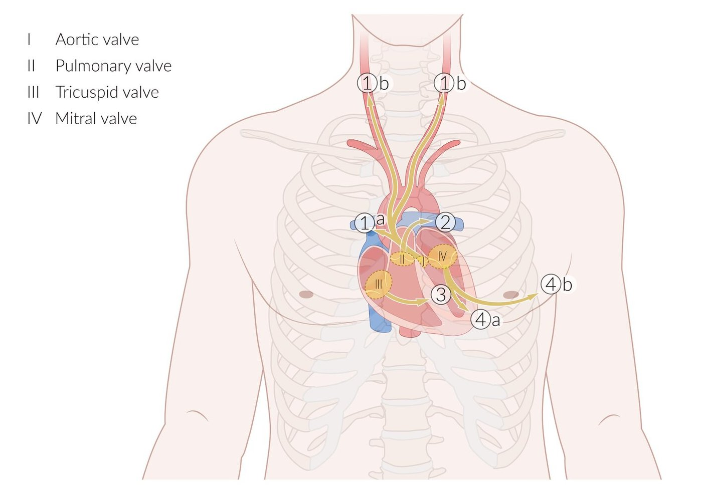
Fig P2Anatomical valve positions (I–IV) vs where each is best heard (1–4); aortic stenosis radiates to the carotids (1b)AMBOSS
⚠️ Recording slip: the left lower sternal border is tricuspid, not mitral
In his closing summary he said "left sternal border → mitral problems." His own slide (and every board source) puts the mitral valve at the apex and the tricuspid at the LLSB.
Systole: aortic and pulmonic open; mitral and tricuspid must be closed. Diastole: the reverse.
A leaky (regurgitant) or narrow (stenotic) valve makes noise at the matching point in the cycle.
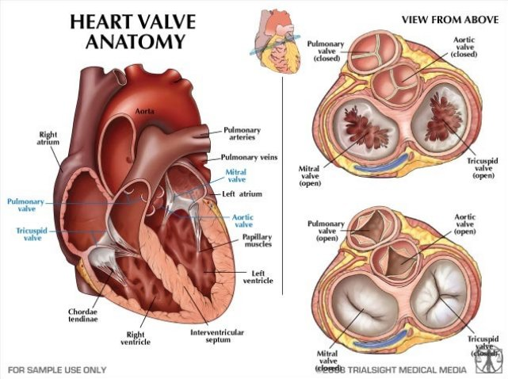
Fig P3Valve anatomy seen from above: in systole the aortic and pulmonic valves open while the mitral and tricuspid close; in diastole the reversePediatric Cardiology lecture · slide 9
Describe every murmur four ways
Timing
Where in the cycle?
Systolic = between S1 and S2 · diastolic = after S2 · continuous = through both.
Type (shape)
How does it change?
Holosystolic (flat, S1 to S2 — VSD) · ejection / crescendo-decrescendo (rises and falls — stenosis) · early · late.
Heard with the stethoscope edge tilted on the chest + thrill
—
6
Heard 5–10 mm off the chest + thrill
Heard with the stethoscope off the chest; rare in children
Slide footnote: diastolic murmurs are only graded up to 4.
Palpate before you listen
Thrill: a palpable vibration from a strong murmur, "like a purring cat". A thrill makes it at least grade 4.
Lift / heave: a diffuse, forceful impulse from an overworked ventricle.
Pericardial friction rub: scratchy, high-pitched and grating. It sounds like a pleural rub, but does not change with breathing.
Other pulsations, and accentuated S1 and S2.
🚩 The one rule to never forget
Find S1 and S2 first ("boom-boom"). A sound between them is systolic. An isolated diastolic murmur (after S2) is never normal. It implies regurgitation, e.g. mitral or tricuspid regurgitation.
Q: You hear a loud systolic murmur and feel a vibration when your palm is on the child's chest. You can't hear it with the stethoscope lifted off. What grade is it?
Answer
At least grade 4/6. A thrill makes it grade 4. Grade 5 is heard with only the stethoscope's edge touching; grade 6 is heard off the chest.
Q: A grade 2/6 systolic murmur is loudest at the 2nd right intercostal space and is also heard over the carotids. Which valve?
Answer
Aortic valve, e.g. aortic stenosis from a bicuspid aortic valve.
Q: A healthy 8-year-old has a soft murmur that starts right after S2. Innocent?
Answer
No — a diastolic murmur is always pathologic. Refer for an echo.
🎬 Watch — optional reinforcement; nothing loads until you click
AbbreviationsRUSB / LUSB / LLSB = right upper / left upper / left lower sternal border · PPS = peripheral pulmonary stenosis · SEM = systolic ejection murmur · S1 / S2 = first / second heart sounds
🔑 The headline number
95 % of heart murmurs in children are innocent. Hearing a murmur is not a reason to "hit the panic button." Other names for the same thing: functional, flow, physiologic, ejection, Still's murmur. Calling any of them "innocent / benign" is never wrong.
Why they come and go: high-output states
More flow → more turbulence → more noise. Innocent murmurs get louder in fever, anemia, pregnancy, thyrotoxicosis.
A thin chest wall also makes them easier to hear.
Heard in a febrile child → recheck when the fever is gone; usually the murmur is gone too.
A new murmur in a young child with sickle cell disease → think chronic anemia first.
Use discretion with parents. A very soft murmur in a well child doesn't need a list of scary possibilities.
The four innocent murmurs in the lecture
Murmur
Where
Sounds like
Age / clue
Cause
Pulmonary flow murmur
LUSB
Soft systolic ejection
Any age
Flow through a normal pulmonic valve, one of the most anterior structures in the chest
Still's murmur
LLSB and apex
Musical, vibratory systolic
Persists through childhood
Flow through or near the chordae tendineae
Venous hum
RUSB / below both clavicles, R > L
Continuous hum, grade 1–2, louder in diastole and inspiration
After age 2 · goes away when you turn the head, lay the child flat, or press on the jugular vein
Venous return in the neck veins
Peripheral pulmonary stenosis (PPS)
LUSB, radiates to both axillae and the back
Soft systolic
Newborn / first weeks
Normally narrow branch pulmonary arteries that expand as the baby grows
The recording adds: the cervical venous hum is the most common continuous murmur in children, loudest in diastole over the right internal jugular vein. Board add-on Still's murmur is the most common innocent murmur, classically at ages ~3–6, louder lying down. PPS usually fades by about 1 year.
Look at the whole child
😊
Reassuring
Thriving, gaining weight, feeding well
Good colour, oxygen saturation, pulses and capillary refill
Soft systolic murmur that changes with position or fever
🚩
Worrying
Turns blue with feeding
Excessively irritable (chronic hypoxia?)
Chronic cough, wheeze, fast breathing (pulmonary edema)
Enlarged liver (backed-up blood / heart failure)
Poor feeding or weight gain
🧠 Memory hook Board add-on
The 7 S's of an innocent murmur: Sensitive (changes with position), Short, Single (no clicks or gallops), Small (not radiating), Soft (grade ≤2), Sweet (not harsh), Systolic.
🩺 Murmur sorter
Pick where it's loudest and when it happens. Built from the lecture's landmarks and cases.
Loudest at
Timing
Pick a location and a timing.
Q: A 4-year-old has a continuous, soft hum below the right clavicle. It disappears when he lies down or turns his head. Next step?
Answer
Reassure: venous hum, an innocent murmur. A continuous murmur that changes with position or jugular compression is benign.
Q: A 3-week-old who is feeding and growing well has a soft systolic murmur at the left upper sternal border radiating to both axillae and the back. Most likely?
Answer
Peripheral pulmonary stenosis, an innocent newborn murmur that fades as the branch pulmonary arteries grow.
Q: A 2-year-old with a temperature of 39.5 °C has a new soft systolic murmur. His exam is otherwise normal. What do you do?
Answer
Fever is a high-output state. Recheck after the fever resolves. The murmur usually disappears.
🎬 Watch — optional reinforcement; nothing loads until you click
LO 3 · Topic 3
⭐ CHD = 1 in 125 births
Slides 22–31 · reasons to refer · congenital heart disease overview · the 4-month murmur
When to Refer — and Congenital Heart Disease
AbbreviationsCHD = congenital heart disease · SOB = shortness of breath · VSD / ASD = ventricular / atrial septal defect · PDA = patent ductus arteriosus · PFO = patent foramen ovale · TOF = tetralogy of Fallot · TGA = transposition of the great arteries · COA = coarctation of the aorta · WCC = well-child check · ECG / EKG = electrocardiogram
Reasons for referral to a pediatric cardiologist (slide 22)
A possibly structural murmurA valve problem or septal defect — "out of your comfort zone."
Exertional chest painAny chest pain with exercise.
Possible arrhythmiaEspecially with chest pain, dizziness or shortness of breath.
Recurrent syncopeAlways worrisome. The sports-screening questions are in Topic 7.
🔍 Features that make a murmur sound structural Board add-on
Any diastolic murmur (lecture) · grade ≥3 or a thrill · harsh or holosystolic · an abnormal S2 (e.g. fixed split) or a click · loudness that does not change with position · symptoms (poor growth, cyanosis, sweating with feeds).
Congenital heart disease — the big picture
CHD happens in 1 in 125 live births — "you are going to see it."
It is the most common birth defect.
It forms in the first 8 weeks of fetal development.
Most cases have no known cause. Some go with syndromes (Turner → coarctation, bicuspid valve).
Fig P6Relative incidence of congenital heart lesions: VSD far ahead (~31 %), then PDA, pulmonary stenosis, ASD, coarctation, bicuspid aortic valve, tetralogy, TGAPediatric Cardiology lecture · slide 25
📈 His update to the slide
The chart says VSD is the most common lesion (>30 %), followed by PDA, pulmonary stenosis, ASD, coarctation, bicuspid aortic valve, tetralogy and TGA. Now that 2D echo is routine, many bicuspid aortic valves are found by chance. For practical purposes, VSD and bicuspid aortic valve are about equally common today.
Sort the lesions by colour and lung blood flow
Cyanotic (blue)
Acyanotic (pink)
↑ Pulmonary blood flow
TGA
VSD · PDA · ASD (left-to-right shunts)
↓ Pulmonary blood flow
TOF
—
Normal pulmonary blood flow
—
Coarctation (obstruction)
Fig P7Sort lesions by colour and pulmonary blood flow: cyanotic ↑ (TGA) or ↓ (TOF); acyanotic ↑ (VSD, PDA, ASD) or normal (coarctation)Pediatric Cardiology lecture · slide 83
Case: a newborn murmur that won't go away
Newborn exam → 4-month well-child check
Nursery: systolic murmur; the rest of the exam is normal (pink, good saturation, good femoral and brachial pulses, clear lungs). Reasonable to wait: it might be a closing PDA or PFO.
1- and 2-week weight checks: still there, but gaining well.
2-month WCC: crying the whole time, so you can't tell.
4-month WCC: the systolic murmur is louder (grade 2–3). It shouldn't be there by now → refer.
The cardiologist takes a history, examines, and gets an ECG and an echo → a large VSD (Topic 4).
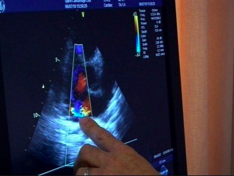
Fig P8Colour-flow Doppler echo: the lighter the colour, the faster the flowPediatric Cardiology lecture · slide 29
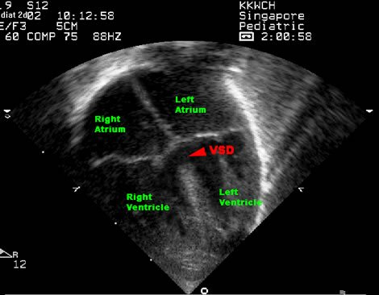
Fig P9Four-chamber echo: a large gap at the top of the ventricular septum (red arrow) = VSDPediatric Cardiology lecture · slide 30
Fig P10VSD: blood goes from high-pressure left ventricle to low-pressure right ventricle (left-to-right shunt)Pediatric Cardiology lecture · slide 31
Slide 30 asks "What direction would the blood flow in this VSD?"Left ventricle → right ventricle, from high pressure to low. It is already oxygenated blood, so the baby isn't blue. A large shunt overloads the lungs.
Q: Which of these needs a pediatric cardiology referral: (a) a soft vibratory LLSB murmur in a well 5-year-old, (b) chest pain every time a 13-year-old runs, (c) a murmur that appears only with fever?
Answer
(b) Exertional chest pain. (a) is a Still's murmur and (c) is a high-output flow murmur. Both are innocent.
Q: How common is congenital heart disease, and when does it form?
Answer
About 1 in 125 live births (the most common birth defect), in the first 8 weeks of gestation, usually with no known cause.
🎬 Watch — optional reinforcement; nothing loads until you click
The heart starts as a simple tube that grows fast, loops to the right, then swings back to the midline.
Three septa divide it: one between the atria, one between the ventricles, and one splitting the truncus arteriosus into aorta and pulmonary artery.
Endocardial cushions fuse to divide the atrioventricular canal. A muscular septum grows up from the floor of the common ventricle.
The atrial septum closes the foramen primum. Before it closes, a second hole (the foramen secundum) opens so blood can keep crossing right → left.
If a step goes wrong, you get a residual hole (VSD, ASD) or swapped great arteries (TGA).
Fetal circulation — two shunts that must close
Placenta → umbilical veinGas exchange happens in the placenta, not the lungs. Fetal oxygen saturation is only 50–65 % (slide).
Ductus venosus → IVC → right atriumA channel through the liver. (The recording says "ductal stenosis" — it means ductus venosus.)
~⅓ crosses the foramen ovaleFrom the right atrium to the left atrium → LV → aorta.
~⅔ goes RV → pulmonary arteryOnly a small fraction (he said ~7 %) enters the fluid-filled lungs. The rest crosses the ductus arteriosus into the aorta.
Umbilical arteries → placentaThey branch off the iliac arteries.
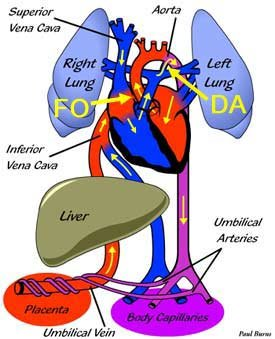
Fig P11Fetal circulation: placenta → umbilical vein → ductus venosus → IVC → right atrium → foramen ovale (FO) to the left atrium, or RV → pulmonary artery → ductus arteriosus (DA) to the aortaPediatric Cardiology lecture · slide 35
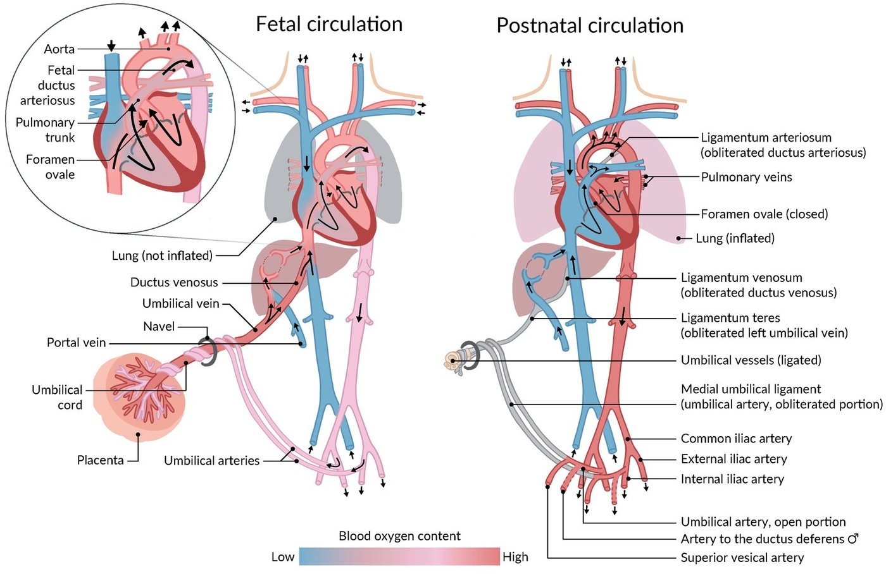
Fig P12Fetal vs postnatal circulation: the foramen ovale closes (→ fossa ovalis) and the ductus arteriosus becomes the ligamentum arteriosumAMBOSS
🧠 At the first breath
The lungs open, PVR falls and oxygen rises. The ductus senses the pressure and oxygen change and functionally closes within ~24 h. Left-atrial pressure now exceeds right, pushing the foramen ovale flap shut. It seals anatomically by 6–12 months. Any hole left open now shunts left → right.
VSD — the most common lesion
The most common CHD. It forms at 4–8 weeks of gestation, when the single ventricle divides.
80 % membranous, 20 % muscular.
Murmur: harsh holosystolic murmur at the LLSB — "one of the most common, if not the most common, pathologic murmurs you'll hear."
Small VSD = high-pitched and often louder. Large VSD = lower-pitched and often softer. You can't judge the size by the loudness.
A closing VSD can get louder as the hole shrinks and the jet speeds up. That is a good sign.
Small VSDs often close on their own within the first 2 years.
A large VSD sends extra blood to the lungs → pulmonary edema, heart failure.
⚠️ Check the slide's incidence figure
Slide 32 says "Incidence = 2 to 5 % of births." Board sources give about 2–5 per 1,000 births, i.e. ~30 % of all CHD. Board add-on
Fig P14Holosystolic murmur (VSD): the same loudness from S1 all the way to S2AMBOSS
PDA — the ductus that stays open
The vessel between pulmonary artery and aorta that bypassed the lungs in utero. It usually closes within 6–24 hours (slide).
Persists more often in preterm infants and with neonatal RDS.
After birth, aortic pressure is higher, so blood flows aorta → pulmonary artery → extra lung volume → pulmonary edema, heart failure, big liver, fast breathing, feeding problems. These develop gradually.
Murmur: can sound like a simple systolic ejection murmur, but the classic is a continuous "machinery" murmur.
Diagnosis: echo with Doppler.
Treatment: IV indomethacin, catheter closure, or surgical ligation.
Fig P15PDA: the vessel connecting the aorta and pulmonary artery stays openPediatric Cardiology lecture · slide 36
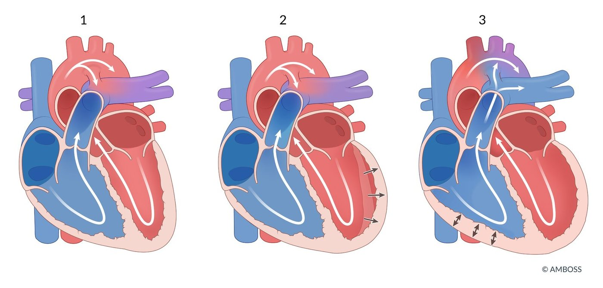
Fig P16PDA: aorta → pulmonary artery in systole and diastole → pulmonary overload and left-heart volume overload → late EisenmengerAMBOSS
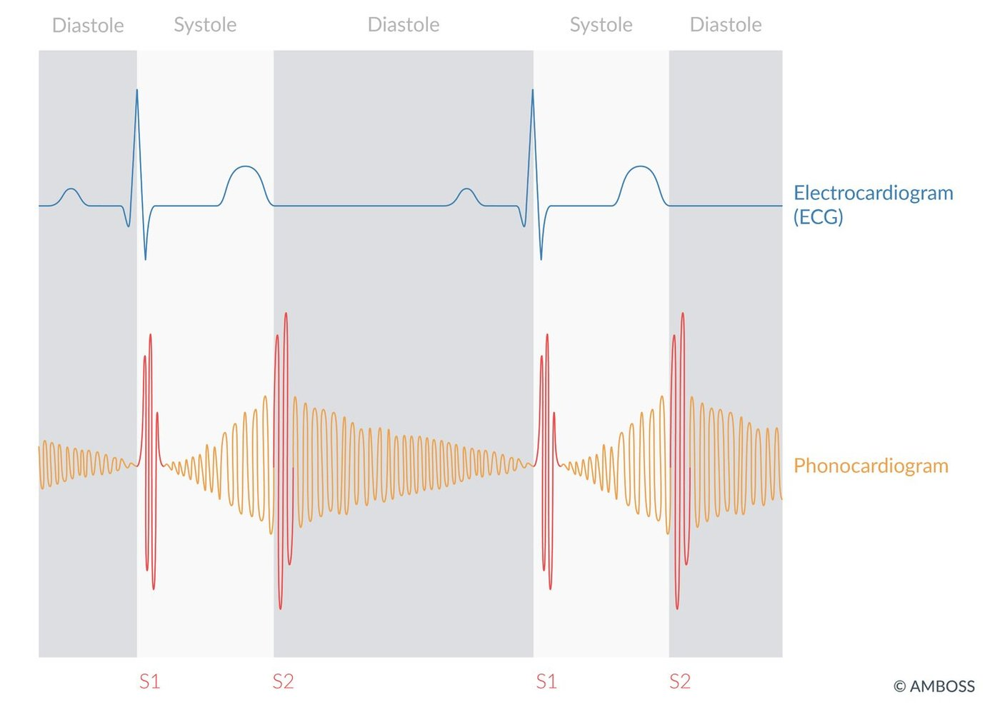
Fig P17PDA = continuous "machinery" murmur through systole and diastole, peaking at S2AMBOSS
Board add-on Indomethacin or ibuprofen (NSAIDs) close the ductus by blocking prostaglandin. PGE₁ keeps it open when the baby depends on it (Topics 5–6). PDA goes with congenital rubella. Look for bounding pulses and a wide pulse pressure.
ASD — the atrial hole
The foramen ovale is a normal, necessary ASD in utero. It usually closes by 6–12 months.
True ASDs come in 4 types and are less common than VSDs. Small ones are often innocent.
Larger ASDs → right-ventricular volume overload with a fixed split S2, arrhythmias (SVT, atrial fibrillation), and thrombotic stroke.
Closure: an Amplatzer septal occluder placed by catheter.
Fig P18ASD: after birth, flow goes left atrium → right atrium (left-to-right)Pediatric Cardiology lecture · slide 39
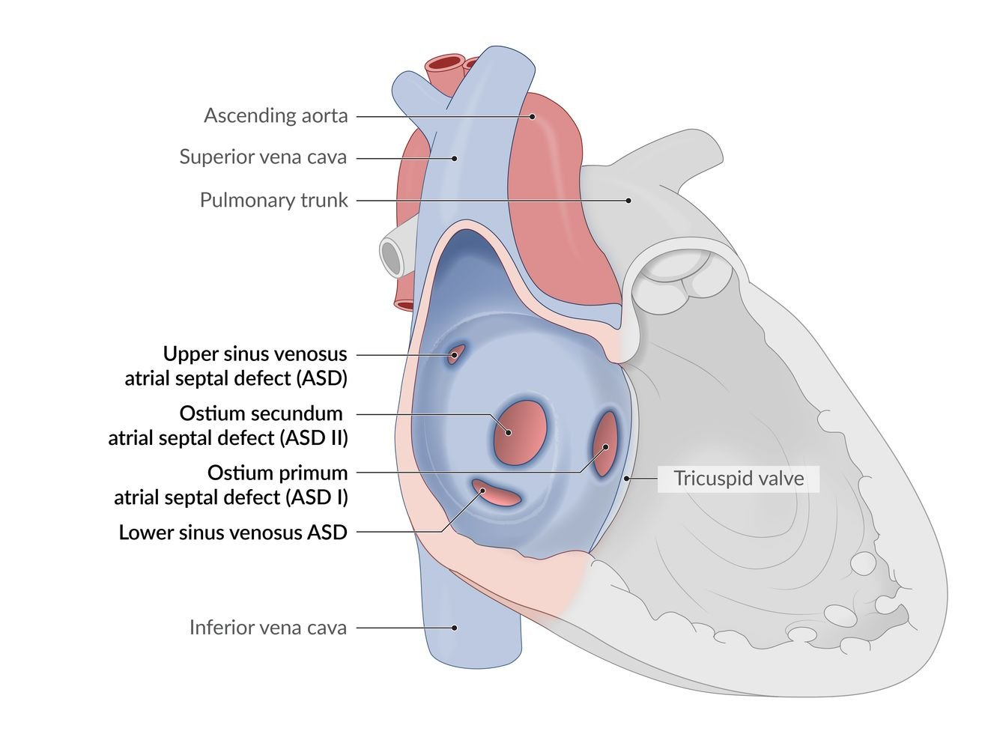
Fig P19ASD types: ostium secundum (~80 %) · ostium primum · upper and lower sinus venosusAMBOSS
Fig P20Fixed split S2 (ASD): A2 and P2 stay apart in both expiration and inspirationAMBOSS
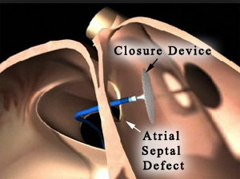
Fig P21Catheter closure: a device is passed across the ASD and opened on both sides of the septumPediatric Cardiology lecture · slide 42
Board add-on The ASD murmur is a soft systolic ejection murmur at the LUSB. It comes from extra flow across the pulmonic valve, not from the hole itself. Ostium secundum is the most common type (~80 %). Paradoxical embolism (a venous clot crossing to the brain) is why it causes stroke.
The three shunts side by side
Lesion
Shunt
Murmur / sign
Natural history
Treatment
VSD
LV → RV
Holosystolic, LLSB; small = louder
Small ones close by ~2 yr
Watch; repair large ones
PDA
Aorta → pulmonary artery
Continuous machinery
Closes 6–24 h; persists in preemies
IV indomethacin, catheter, ligation
ASD
LA → RA
Fixed split S2; soft SEM
FO closes by 6–12 mo; small ASD often innocent
Amplatzer device
Q: A VSD murmur that was grade 2 last year is now grade 3 and higher-pitched. The child is thriving. Is this bad news?
Answer
Usually good news. A shrinking hole speeds up the jet, making it louder and higher-pitched. It may be about to close. Confirm with echo.
Q: A 28-week preterm infant has a continuous murmur, bounding pulses and increasing breathing difficulty. What is the lesion and the drug?
Answer
PDA, treated with IV indomethacin (an NSAID that blocks prostaglandin), or catheter/surgical closure.
Q: Which heart sound finding points to a large ASD, and what complications does it bring?
Answer
A fixed split S2 (right-ventricular overload). Complications: SVT / atrial fibrillation and thrombotic stroke.
🎬 Watch — optional reinforcement; nothing loads until you click
The narrowing is usually near where the ductus arteriosus inserts.
BP is normal or high before the narrowing (arms) and low beyond it (legs).
Check femoral pulses on every newborn. It takes diligence, but do it.
How fast to intervene depends on the pressure gradient across the narrowing.
Options: balloon angioplasty (catheter up from the femoral artery) or surgical resection and re-anastomosis.
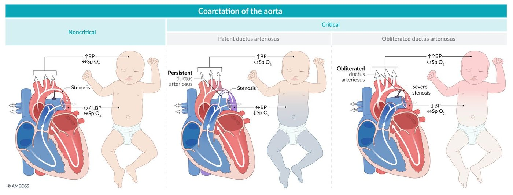
Fig P27Non-critical vs critical coarctation: a critical one depends on the ductus — once it closes, the lower body is starvedAMBOSS
Board add-on A critical coarctation is ductal-dependent: the baby crashes into shock as the ductus closes (days 1–2). Give PGE₁ to reopen it. In older children and adults, look for arm hypertension, delayed femoral pulses ("brachiofemoral delay") and rib notching from collateral arteries.
Webbed neck, broad chest with widely spaced nipples, short stature, low hairline, high-arched palate.
About 25–30 % have coarctation, and nearly as many have a bicuspid aortic valve.
→ Suspect Turner? Get an echo to rule out coarctation and BAV.
Case: 3-year-old with a family history of bicuspid valves
New patient, screening echo cancelled on moving day
Grade 2/6 systolic murmur at the RUSB. Could it be BAV? Yes. RUSB points to the aortic valve, and the recording is aortic stenosis introduced by an ejection click. The systolic murmur ends at S2, then silence.
Fig P30Intraoperative view of a stenotic bicuspid aortic valvePediatric Cardiology lecture · slide 56
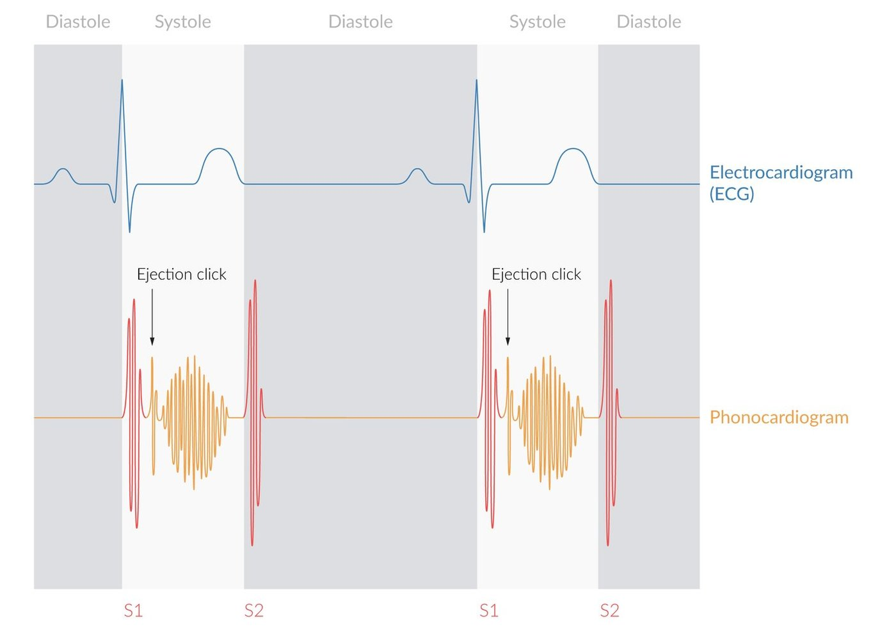
Fig P31Aortic stenosis: ejection click, then a crescendo-decrescendo systolic murmur; radiates to the carotidsAMBOSS
Bicuspid aortic valve
Inherited. It has 2 leaflets instead of 3.
Found in 1–2 % of people · males > females, 2:1.
Often silent in young children, so it's missed or found by chance on echo.
Over time: aortic stenosis and regurgitation, aortic dilation, aneurysm and dissection, and endocarditis.
Nearly all will need valve surgery in their lifetime.
Aortic-area murmur → listen over the carotids. The murmur (even a thrill) may radiate there.
💬 Student question: operate early?
No. The cardiologist follows with an echo about every 2 years. Children are usually symptom-free. They intervene when the pressure gradient across the valve reaches set criteria: first balloon valvuloplasty, eventually a prosthetic valve. "If it ain't broke, don't fix it."
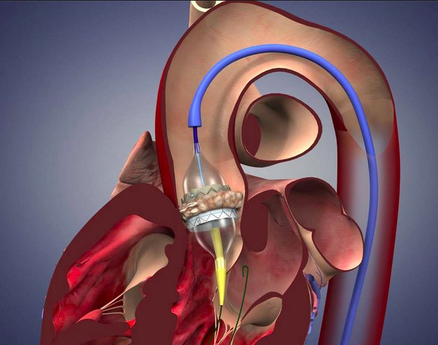
Fig P32Balloon valvuloplasty of a stenotic bicuspid aortic valve (catheter up the aorta)Pediatric Cardiology lecture · slide 59
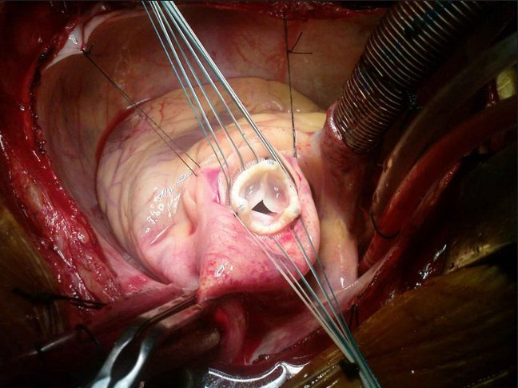
Fig P33Intraoperative view of a bioprosthetic aortic valve replacementPediatric Cardiology lecture · slide 60
Case: "noisy breathing" that wasn't tracheomalacia
Term girl, noisy breathing from birth; choking at 6 months
First thought to be benign tracheomalacia (a floppy trachea; usually just observed).
At 6 months: frequent choking episodes, with no reflux (GERD) and no wheeze.
CXR: a suspected right-sided mass beside the trachea → barium swallow: the esophagus is indented instead of straight → CT angiogram confirms it.
Diagnosis: vascular ring (here a double aortic arch). The vessels wrap around and squeeze both the trachea and the esophagus with every heartbeat.
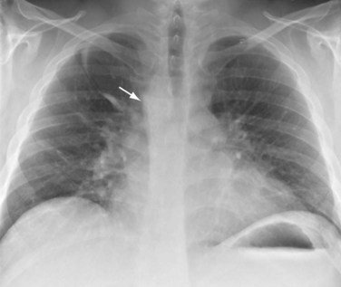
Fig P34Chest x-ray: a right-sided bulge beside the trachea (arrow)Pediatric Cardiology lecture · slide 62
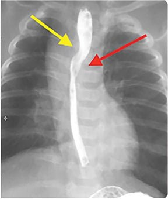
Fig P35Barium swallow: the esophagus is pushed in from the side (arrows) instead of running straightPediatric Cardiology lecture · slide 63
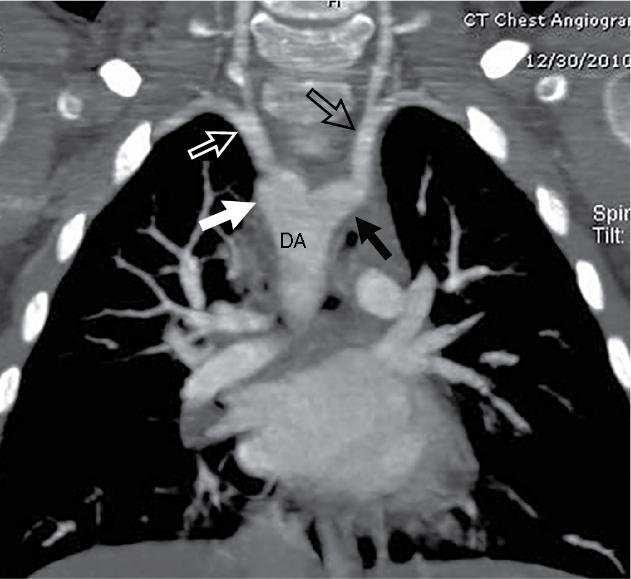
Fig P36CT angiogram: vessels encircling the trachea and esophagus (arrows) — the definitive testPediatric Cardiology lecture · slide 64
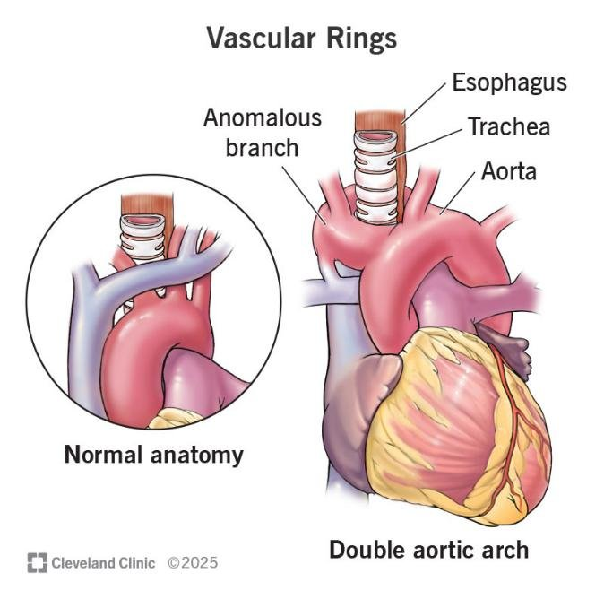
Fig P37Double aortic arch: two arches wrap around and squeeze the trachea and esophagusPediatric Cardiology lecture · slide 65
Vascular rings or slings
7 per 10,000 live births
Abnormal embryologic development of the great vessels.
Barium swallow suggests it; CT angiogram confirms it. Treatment is cardiothoracic surgery.
Q: A newborn has weak femoral pulses and arm blood pressure 30 mmHg higher than leg blood pressure. What's the diagnosis and which syndrome should you think of in a girl?
Answer
Coarctation of the aorta. In a girl, think Turner syndrome (45,X) (25–30 % have coarctation).
Q: A child with a bicuspid aortic valve has no symptoms and a mild gradient. Should the valve be replaced now to prevent dissection?
Answer
No. Follow with serial echo (~every 2 years). Intervene when the gradient meets criteria. Nearly all will eventually need surgery.
Q: An infant has stridor and choking, and the barium swallow shows the esophagus pushed in from the side. What confirms the diagnosis?
Answer
CT angiogram, which shows a vascular ring. Treatment is surgery.
🎬 Watch — optional reinforcement; nothing loads until you click
LO 2 · Topic 6
⭐ Boot-shaped heart = classic board question
Slides 67–83 · tetralogy of Fallot · the Blalock-Taussig story · hypoplastic left heart · transposition
Cyanotic Heart Disease
AbbreviationsTOF = tetralogy of Fallot · PS = pulmonary (pulmonic) stenosis · RVH = right ventricular hypertrophy · RVOT = right ventricular outflow tract · SVR / PVR = systemic / pulmonary vascular resistance · BT shunt = Blalock-Taussig shunt · HLHS = hypoplastic left heart syndrome · TGA / TGV = transposition of the great arteries / vessels · PDA = patent ductus arteriosus · PFO = patent foramen ovale · PGE₁ = prostaglandin E1 · NICU = neonatal intensive care unit · APGAR = newborn score out of 10 · LMA = laryngeal mask airway · U/S = ultrasound
Case: sat 80 % on 100 % oxygen
37-week infant, APGAR 4 and 7
O₂ saturation stays at 80 % despite 100 % oxygen. Circumoral cyanosis (blue around the mouth). Grade 3/6 systolic murmur. Clear, equal breath sounds.
Blue with healthy lungs that doesn't respond to oxygen → cyanotic congenital heart disease. Stat CXR → boot-shaped heart → tetralogy of Fallot.
Board add-on Failure to improve on 100 % O₂ (the hyperoxia test) separates a cardiac shunt from lung disease.
Fig P38Circumoral (around-the-mouth) cyanosis in a newbornPediatric Cardiology lecture · slide 68
Tetralogy of Fallot
Rare and complex: about 5 in 10,000 babies.
Four defects:large VSD · pulmonary stenosis · right ventricular hypertrophy · overriding aorta.
The narrow pulmonic outflow forces deoxygenated RV blood across the VSD into the aorta (right → left) → cyanosis.
Tet spell: during crying or feeding, right-to-left shunting surges → blue lips and limbs.
"Boot-shaped heart" on CXR — the hypertrophied RV lifts the apex. "A typical board question."
Fig P40"Tet spell": bluish skin during crying or feedingPediatric Cardiology lecture · slide 71
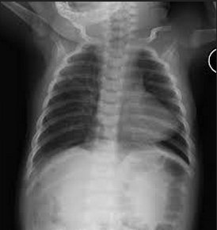
Fig P41"Boot-shaped heart" on chest x-ray — the right ventricle lifts the apexPediatric Cardiology lecture · slide 72
Fig P42Tet spell mechanism: ↓ systemic resistance or ↑ pulmonary resistance → more right-to-left shunt. Knee-to-chest (or squatting) ↑ systemic resistance → less shuntAMBOSS
Board add-on The AMBOSS mechanism: agitation ↓ SVR (or ↑ PVR) → worse outflow obstruction → more right-to-left shunt. Knee-to-chest position or squatting ↑ SVR, pushing blood back toward the lungs. The degree of pulmonary stenosis decides how blue the baby is.
Repair — and the story behind the first operation
Repair is done soon after birth or later in infancy depending on the degree of pulmonary stenosis. The worse the stenosis, the less blood reaches the lungs and the sooner surgery is needed.
Goal of surgery: reduce the shunting and get more blood to the lungs.
The first procedure was the Blalock-Taussig shunt: an end-to-side subclavian artery → pulmonary artery connection. It produces a continuous murmur under the clavicle on the side of the shunt.
Developed by surgeon Alfred Blalock, cardiologist Helen Taussig and lab technician Vivien Thomas. Their story is told in the 2004 HBO film Something the Lord Made.
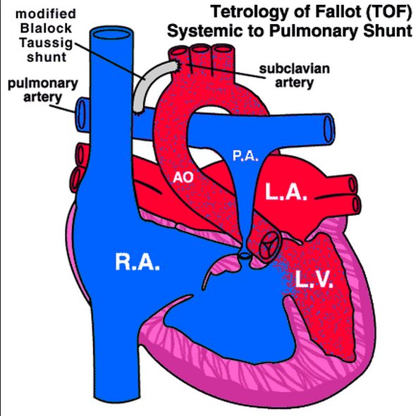
Fig P43Modified Blalock-Taussig shunt: subclavian artery → pulmonary artery, to get more blood to the lungsPediatric Cardiology lecture · slide 75
Case: the 10-day-old autopsy
Died en route to the ER: fast breathing, fast heart rate, diffuse cyanosis, shock
Autopsy: large liver, heavy congested lungs, a small, light heart.
The PDA is nearly closed (1 mm); there is an ASD; the left ventricle is tiny.
→ Hypoplastic left heart syndrome. The baby lived only while the ductus stayed open.
Fig P44Normal heart vs hypoplastic left heart: tiny left ventricle, closed mitral valve — the body depends on the PDA and ASDPediatric Cardiology lecture · slide 79
Incidence about 1 in 4,350 births (~960 infants/year).
For the first few days, the PDA and PFO keep the body supplied.
As they close → worsening cyanosis → sudden fast breathing, fast heart rate, low BP, unconsciousness, cardiogenic shock.
High mortality, but it may be picked up on prenatal ultrasound.
Treatment: prostaglandin E1 (PGE₁) to keep the ductus open → 3-stage heart surgery or heart transplant.
⚠️ Getting the flow direction right in HLHS
The recording's description of the shunt directions was garbled. The correct version: the tiny LV can't pump to the body, so the RV pumps into the pulmonary artery and across the PDA into the aorta (right → left) to reach the body. Oxygenated blood returning from the lungs to the LA must cross the ASD / PFO into the RA (left → right). Close either one and the baby goes into shock. The three stages are Norwood → Glenn → FontanBoard add-on.
Transposition of the great arteries
The great arteries are swapped: aorta from the right ventricle, pulmonary artery from the left. Deoxygenated blood goes back out to the body; oxygenated blood goes back to the lungs.
That makes two parallel, separate circuits. Survival depends on mixing through a PDA, PFO/ASD or VSD.
The lecture only touched on it, and the recording mixed up which artery came from which ventricle. The version above is correct.
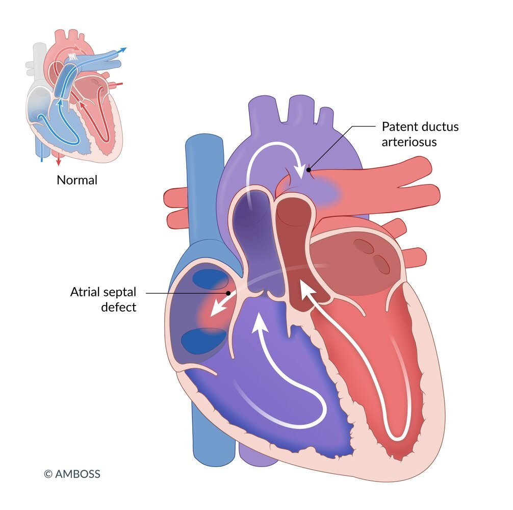
Fig P46Transposition: the aorta arises from the right ventricle — survival needs mixing through a PDA and/or PFO/ASDAMBOSS
Board add-on Cyanosis in the first hours of life. Give PGE₁ ± a balloon atrial septostomy to allow mixing, then the arterial switch operation. The CXR shows an "egg on a string." It is associated with maternal diabetes.
The cyanotic list (slide 82)
Tetralogy of FallotTransposition of the great vesselsTricuspid atresiaTruncus arteriosusTotal anomalous pulmonary venous drainageHypoplastic left heart syndromePulmonary atresiaEbstein anomaly
🧠 Memory hook Board add-on
The 5 T's of cyanotic heart disease, matched to a count: 1 trunk (Truncus arteriosus) · 2 arteries swapped (Transposition) · 3 — Tricuspid atresia · 4 — Tetralogy · 5 words — Total Anomalous Pulmonary Venous Return.
Lesion
Key anatomy
Clue
First step
TOF
VSD + PS + RVH + overriding aorta
Tet spells · boot-shaped heart
Knee-chest for spells; timed repair (BT shunt historically)
HLHS
Tiny LV, mitral and aortic valves
Shock as the ductus closes in the first days
PGE₁ → 3-stage surgery or transplant
TGA
Aorta from RV, pulmonary artery from LV
Blue at birth; needs a mixing hole
PGE₁ ± septostomy → arterial switch Board add-on
Q: A newborn is still at 80 % saturation on 100 % oxygen, has clear lungs and a 3/6 systolic murmur. The CXR shows a boot-shaped heart. Name the four defects.
Answer
Tetralogy of Fallot: VSD, pulmonary stenosis, right ventricular hypertrophy, overriding aorta.
Q: A 5-day-old who was well at discharge presents in shock with weak pulses everywhere. Echo shows a tiny left ventricle. What drug do you start immediately, and why?
Answer
Prostaglandin E1 (PGE₁) to reopen the ductus arteriosus. In HLHS, the systemic circulation depends on it.
Q: What did the Blalock-Taussig shunt connect, and what was it for?
Answer
Subclavian artery → pulmonary artery, to increase pulmonary blood flow in tetralogy of Fallot.
🎬 Watch — optional reinforcement; nothing loads until you click
LO 4 · Topic 7
⭐ Prodrome = benign · exertion = red flag
Slides 84–91 · the frog-dissection faint · three categories · vasovagal · red flags · AAP screening questions
Pediatric Syncope
AbbreviationsNMS = neurally mediated syncope (vasovagal) · α-adrenergic = alpha-adrenergic (sympathetic tone that tightens blood vessels) · SOB = shortness of breath · AAP = American Academy of Pediatrics · HCM = hypertrophic cardiomyopathy · LQTS = long QT syndrome · VT = ventricular tachycardia · ECG = electrocardiogram
Case: the frog dissection
14-year-old in a hot science classroom in late spring
Little breakfast, a hot room, a frog dissection ("probably not her thing"). She collapses; a classmate catches her. She lies pale, sweaty and nauseated. → Vasovagal (neurally mediated) syncope — "very common."
Definitions and numbers
Syncope = a temporary loss of consciousness from a reversible disturbance of brain function (too little blood flow to the brain).
In children it is usually benign, most often a brief change in vasomotor tone.
15–20 % of children faint at least once before the end of adolescence (slide; he also quoted ~25 %). About 60 % of those have another episode.
Category
How common
Mechanism / examples
1. Neurally mediated (vasovagal)
By far the most common
Peripheral α-adrenergic withdrawal + increased parasympathetic tone. Triggered by emotional distress or prolonged standing.
Lightheaded · dizzy · nausea · pallor · short of breath · sweating · visual changes.
🛌
Initial treatment
Lie down and elevate both legs · rest and more fluids · slow position changes (sit back down if lightheaded on standing — that's orthostatic) · mildly liberalize salt. "Kids usually get too little salt, not too much."
When a faint is worrying
🚩 Red flags
Sudden loss of consciousness with no prodrome, while sitting or lying.
Syncope during exercise or activity.
Chest pain, palpitations or shortness of breath before or with the episode.
Recurrent unexplained episodes.
Family history of sudden death, HCM, long QT or VT.
AAP: four questions to ask at every sports pre-participation exam
Have you ever fainted, passed out or had a seizure suddenly and without warning?Especially during exercise, or in response to sudden loud sounds (doorbell, alarm clock, ringing phone).
Have you ever had exercise-induced chest pain or shortness of breath?
Is anyone in your family known to have died suddenly and unexpectedly before age 50?
Is anyone in your family diagnosed with a sudden-death condition?E.g. hypertrophic cardiomyopathy, long QT syndrome, ventricular tachycardia.
Board add-on Fainting triggered by a sudden loud noise is classic for long QT type 2. Fainting while swimming or exercising is classic for long QT type 1.
👶 Breath-holding spells
Toddlers and infants in a temper tantrum can hold their breath until they pass out. It is a syncopal episode, but self-induced.
🧭 Faint triage
Tick everything in the story. Any red feature overrides the reassuring ones.
Tick the features in the story.
Q: What is the mechanism of neurally mediated (vasovagal) syncope?
Answer
Peripheral α-adrenergic withdrawal (the vessels relax) plus enhanced parasympathetic (vagal) tone (the heart slows) → less blood to the brain.
Q: A 15-year-old basketball player passes out mid-sprint with no warning. Vasovagal?
Answer
No — exertional syncope with no prodrome is a red flag. Get an ECG, refer to cardiology, and keep him out of sports until cleared. Think HCM, long QT, WPW.
🎬 Watch — optional reinforcement; nothing loads until you click
LO 5 · Topic 8
⭐ Sinus arrhythmia = the most common "arrhythmia" — and it's normal
Slides 92–102 · normal rates by age · conduction · sinus arrhythmia · PACs · PVCs · Holter
Normal Rates & Innocent Irregular Beats
Abbreviationsbpm = beats per minute · SA node = sinoatrial node (the pacemaker) · AV node = atrioventricular node · PAC = premature atrial contraction · PVC = premature ventricular contraction · NSR = normal sinus rhythm · VT = ventricular tachycardia · QRS = the ventricular complex on the ECG
Normal heart rates by age (slide 93)
Age
Range (bpm)
Average (bpm)
Newborn
100–170
120
Infant to 2 years
80–130
110
2–6 years
70–120
100
6–10 years
60–110
90
10–16 years
60–100
80
A newborn at 120–140 is normal, not tachycardic. The rate falls with age. A very fit 16–17-year-old athlete can rest in the 50s.
Impulses start at the SA node, travel the internodal tracts (plus Bachmann's bundle to the left atrium) to the AV node, then down the right and left bundle branches.
Innocent irregular beats — felt as "palpitations"
Sinus arrhythmia
Most common · normal
The rate speeds up on inspiration and slows on expiration. Every beat still has an identical P before the QRS.
Premature atrial contraction (PAC)
Common in everyone
An early beat from the atrium (not the SA node) → different P-wave shape and timing, normal narrow QRS.
Premature ventricular contraction (PVC)
Occasional is common
Early, wide, bizarre QRS with no P wave before it. Ask about caffeine and energy drinks.
🧠 Why sinus arrhythmia happens
He explained it through oxygen delivery. The standard mechanism is vagal tone: breathing in briefly lowers vagal tone, so the rate rises; breathing out restores it, so the rate falls. Either way, it is a normal finding, especially in children. Board add-on
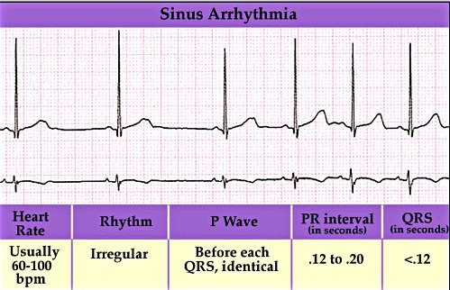
Fig P48Sinus arrhythmia: rate varies with breathing, but every beat has the same P before the QRS — normalPediatric Cardiology lecture · slide 96
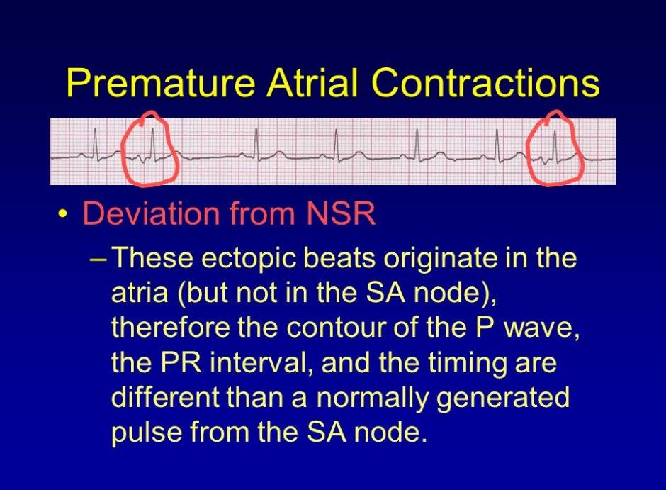
Fig P49Premature atrial contractions (circled): early beat, different P-wave shapePediatric Cardiology lecture · slide 97
PVCs — when do they get worrying?
Couplet = 2 PVCs in a row.
3 PVCs in a row = ventricular tachycardia — "a little worrisome."
Uniform (unifocal) = every PVC looks the same (one focus). Multiform (multifocal) = different shapes from more than one focus. That means a hyperexcitable heart and is more worrying.
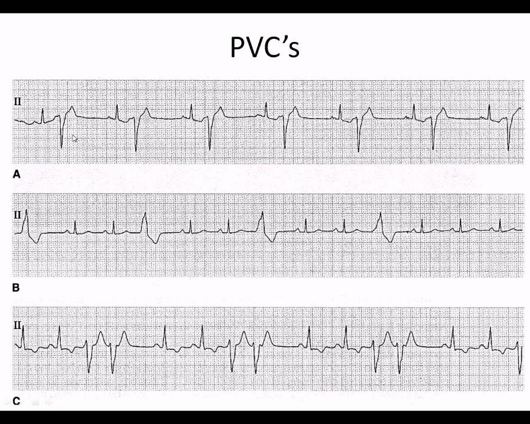
Fig P50PVCs: (A) every other beat · (B) · (C) two in a row = a coupletPediatric Cardiology lecture · slide 98
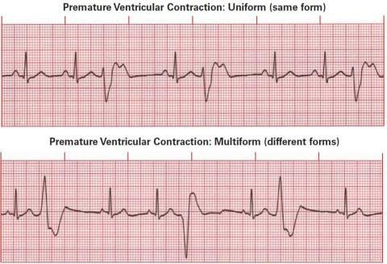
Fig P51Uniform PVCs (same shape, one focus) vs multiform PVCs (different shapes, more than one focus — more worrying)Pediatric Cardiology lecture · slide 99
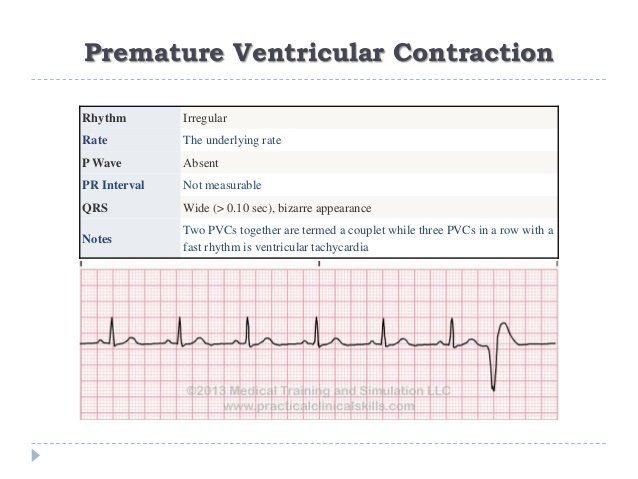
Fig P52A PVC: early, wide, bizarre QRS with no P wave before itPediatric Cardiology lecture · slide 100
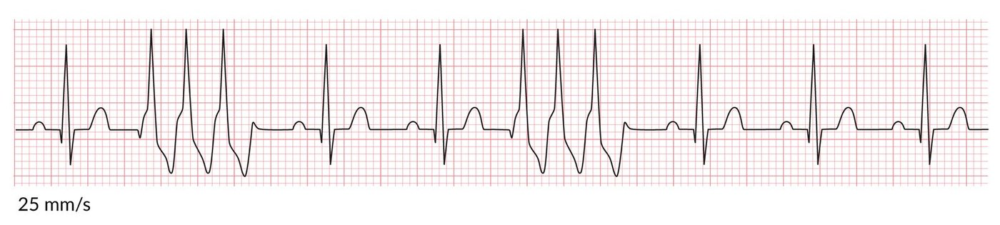
Fig P53Three PVCs in a row (a triplet) = a short run of ventricular tachycardiaAMBOSS
Catching the beat: Holter and event monitors
An office ECG usually misses an intermittent arrhythmia.
A Holter monitor records continuously. An event recorder lets the child press a button when they feel symptoms.
"Once you capture it, it makes life a lot easier."
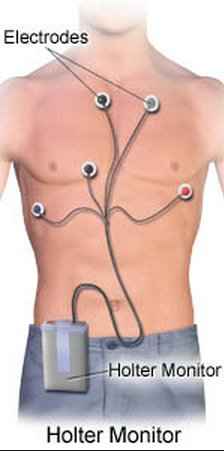
Fig P54Holter monitor: continuous recording to catch an arrhythmia the office ECG missesPediatric Cardiology lecture · slide 102
Q: A healthy 7-year-old's heart rate rises when she breathes in and falls when she breathes out. Every beat has a normal P wave. What is it?
Answer
Sinus arrhythmia, the most common and completely normal pediatric "arrhythmia." Reassure.
Q: A teen has occasional wide early beats with no preceding P wave, all the same shape. He drinks two energy drinks a day. What are they, and when would they be worrying?
Answer
Uniform PVCs, likely caffeine-related (cut back). Worrying if multiform, or in runs of 3 or more (VT), or with symptoms.
Q: Is a heart rate of 130 normal in a 2-week-old?
Answer
Yes. The normal newborn range is 100–170 (average ~120).
🎬 Watch — optional reinforcement; nothing loads until you click
LO 5 · Topic 9
⭐ Ice to the face breaks SVT
Slides 103–114 · paroxysmal SVT · Wolff-Parkinson-White · long QT (the imipramine case)
Remarkably resilient: they can tolerate SVT at 200–250 for hours. They show lethargy, poor feeding, irritability, and eventually heart failure.
🧒
Children
Less resilient: palpitations, syncope, dizziness, chronic fatigue, shortness of breath, chest discomfort. Anything from no symptoms to sudden cardiac death.
Often short and may stop on its own. It may cause no symptoms, or palpitations, dizziness, shortness of breath or chest tightness.
Usually re-entry (a "circus rhythm"), sometimes through an accessory pathway.
A rate of 120–150 on an anxious 10-year-old's smartwatch is not SVT. SVT needs rates of ~180+ with no sinus variation.
Reading the rate: count big boxes between QRS complexes — 1 → 300, 2 → 150, 3 → 100. The slide's tracing is a little under 300, so about 250.
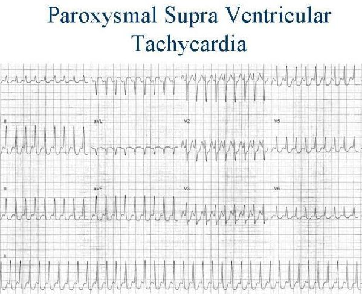
Fig P56Paroxysmal SVT in a child: regular, narrow, very fast (~250/min)Pediatric Cardiology lecture · slide 106
Treating SVT
Treat if it is symptomatic, prolonged or recurrent. First decide: hemodynamically stable or unstable? A child who is talking, with good oxygen and blood pressure, gives you time. One who is unresponsive, poorly perfused or hypoxic does not.
Vagal manoeuvresOlder child: hold the breath, cough, bear down / tense the abdomen. Infant: an ice bag over the forehead and nasal bridge for 20–30 s. This triggers the diving reflex — "literally put an ice bag on a baby in SVT and it can break it."
AdenosineVery short half-life (seconds). "All of a sudden the SVT becomes asystole, and then the rhythm kicks back in."
Recurrent → ablationCatheter ablation of the extra pathway is the cure.
⚠️ Don't do these — and one correction
No pressure on the eyeballs: it can cause retinal detachment. Jugular pressure doesn't usually work.
He said adenosine "needs to be given close to the heart, like a central line." Board add-on In PALS it is given as a rapid push into a large IV as close to the heart as possible, followed immediately by a saline flush (0.1 mg/kg, then 0.2 mg/kg). A peripheral IV works if the push is fast. A central line is not required.
Wolff-Parkinson-White
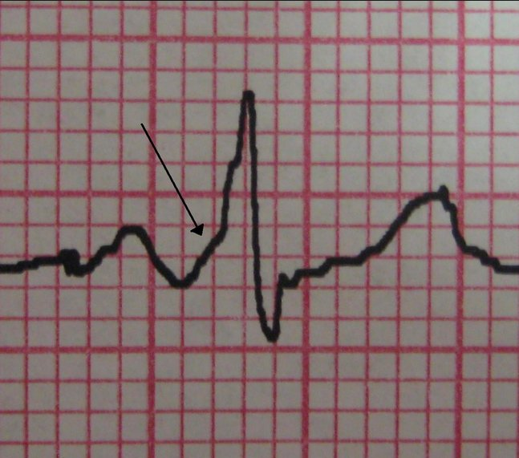
Fig P57What is the arrow pointing at? The slurred upstroke into the QRS = delta wave (WPW)Pediatric Cardiology lecture · slides 109–110
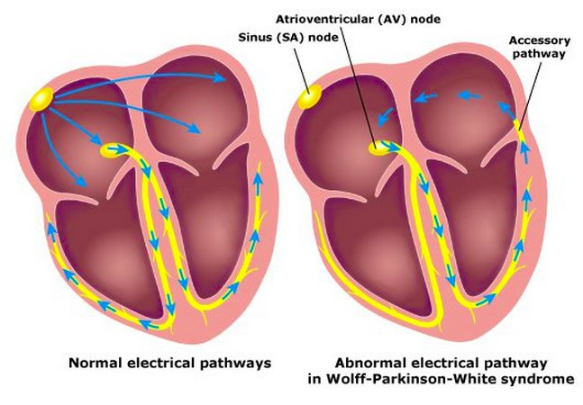
Fig P58Normal pathway vs WPW: an extra (accessory) pathway lets the impulse skip the AV nodePediatric Cardiology lecture · slide 110
Slide 109 asks "What is this wave form?" → the delta wave: a slurred upstroke running from the P wave into the QRS.
An accessory pathway bypasses the AV node → early activation (delta wave) and re-entry tachycardia.
1.5 per 1,000 · males slightly > females · two peaks: infants and adolescents.
Treatment: possibly antiarrhythmic drugs, but primarily radiofrequency ablation.
Board add-on WPW on the ECG: short PR + delta wave + wide QRS. If atrial fibrillation conducts down the pathway, avoid AV-nodal blockers (adenosine, calcium channel blockers, β-blockers, digoxin); use procainamide or cardiovert. Associated with Ebstein anomaly. More in the ECG II notes.
Case: syncope on imipramine
12-year-old with bedwetting, three unexplained faints in 4 months
Night-time bedwetting (nocturnal enuresis) resistant to hypnosis and DDAVP → started on low-dose imipramine (a tricyclic antidepressant). It helped.
Then three brief, unexplained syncopal episodes. The heart exam is normal, but the ECG explains it.
QT from the start of Q to the end of T: 0.63 s (normal example: 0.44 s) → prolonged QT syndrome.
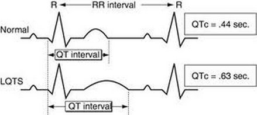
Fig P59Case: QTc 0.44 s (normal) vs 0.63 s (long QT syndrome)Pediatric Cardiology lecture · slide 113
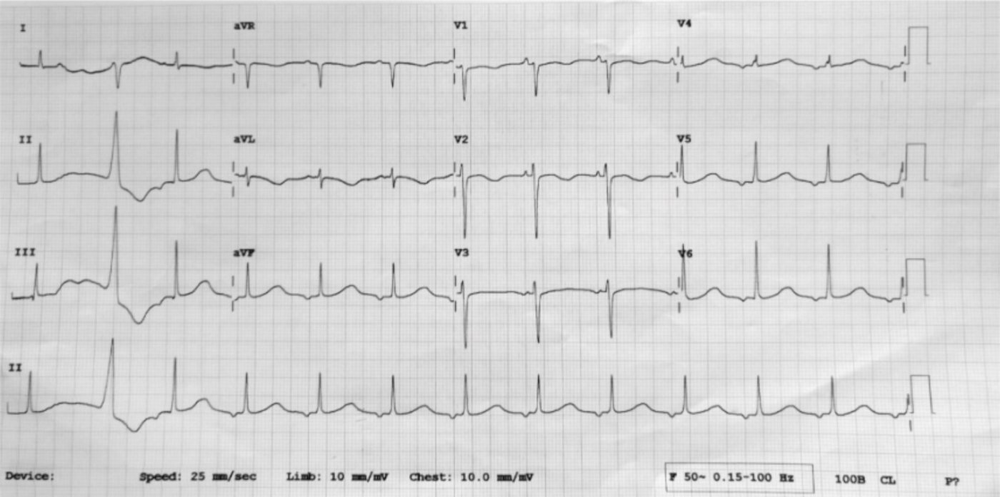
Fig P6012-lead ECG with a long QT (QTc ≈ 580 ms)AMBOSS
What it is
Genetic ion-channel disease
Inherited abnormal ion-channel proteins. 1 in 5,000 · about 1,000 US deaths a year.
Symptoms
Can be the first and last
Unexplained bradycardia, palpitations, syncope, seizure, or sudden death.
ECG cut-offs (children)
Slide 114
Normal QT < 440 ms · prolonged > 460 ms.
Treatment
Long term
Implantable cardioverter-defibrillator (ICD).
Board add-on Tricyclics like imipramine prolong the QT, which is why this case unmasked it. Stop QT-prolonging drugs (tricyclics, macrolides, ondansetron, antipsychotics). β-blockers are first-line, with an ICD for high-risk patients. Torsades → IV magnesium. Long QT + congenital deafness = Jervell and Lange-Nielsen syndrome.
Q: A 3-month-old is feeding poorly and irritable, with a regular narrow rhythm at 260. BP and perfusion are good. What is the first move?
Answer
Vagal manoeuvre: an ice bag on the face for 20–30 s (diving reflex). If that fails → adenosine. If unstable → synchronized cardioversion.
Q: A slurred upstroke into the QRS on an adolescent's ECG — what is it, and what is the definitive treatment?
Answer
A delta wave → Wolff-Parkinson-White (accessory pathway). Definitive treatment is radiofrequency ablation.
Q: What QT value is prolonged in a child, and what is the long-term treatment in the lecture?
Answer
> 460 ms (normal < 440 ms). Long-term treatment: ICD (plus β-blockers and avoiding QT-prolonging drugs Board add-on).
🎬 Watch — optional reinforcement; nothing loads until you click
LO 6 · Topic 10
⭐ HCM = #1 cause of sudden death in young athletes
Slides 115–128 · the soccer championship collapse · sudden cardiac death · hypertrophic cardiomyopathy
Hypertrophic Cardiomyopathy & Sudden Cardiac Death
AbbreviationsHCM = hypertrophic cardiomyopathy · HOCM = hypertrophic obstructive cardiomyopathy · SCD = sudden cardiac death · LVH = left ventricular hypertrophy · LVOT = left ventricular outflow tract · SAM = systolic anterior motion (of the mitral valve) · AED = automated external defibrillator · ICD = implantable cardioverter-defibrillator · VT / VF = ventricular tachycardia / fibrillation · NSR = normal sinus rhythm · ED = emergency department · ICU = intensive care unit · AD = autosomal dominant · IHSS = idiopathic hypertrophic subaortic stenosis (an old name for HOCM)
Case: the championship game
16-year-old soccer player — a near-miss of sudden cardiac death
Warnings he ignored3 months of brief palpitations and dizziness after wind sprints. He told no one.
CollapseA non-contact collapse during the game. Unarousable, fast thready pulse. The trainer calls 911 and sends a teammate for the AED.
AEDIt reads VT → shock → still VT → second shock → he moans and moves; sinus rhythm.
EDGroggy, rubbing his chest. ECG: NSR with LV hypertrophy.
Fig P61LV hypertrophy on ECG: large S waves in V1–V2, large R waves in V5–V6Pediatric Cardiology lecture · slide 119Fig P62Case echo: a massively thickened septum and LV wallPediatric Cardiology lecture · slide 121
💡 AEDs save lives
"AEDs are life-saving and should be around everywhere, especially at sporting events." HCM mortality used to be 3–6 %. It is now about 1 % thanks to AEDs and trained staff.
Sudden cardiac death in young athletes
Fig P63Sports linked with sudden cardiac death: basketball, then football, then trackPediatric Cardiology lecture · slide 122
Fig P64Causes of sudden cardiac death in young athletes (1,435 cases): HCM 36 %, coronary artery anomalies 17 %, possible HCM 8 %…Pediatric Cardiology lecture · slide 123 · Maron, Circulation 2007
Sports most often involved: basketball, then track and football.
Causes in 1,435 young athletes: HCM 36 % (the most common) · coronary artery anomalies 17 % · possible HCM 8 % · then myocarditis, ARVC (arrhythmogenic right ventricular cardiomyopathy), mitral valve prolapse, ion-channel disease, aortic stenosis, and others.
HCM — the slide in full
Genetics
Heart-muscle disorder
Autosomal dominant · males > females.
Exam
Physical exam
Harsh crescendo-decrescendo systolic murmur that gets louder with Valsalva.
Echo
Diagnosis
A thick LV, most pronounced in the septum. It usually doesn't show until early adolescence.
How it kills
Sudden death
Lethal arrhythmias: VT or VF. The thick wall scars and leaves less room to fill.
Treatment
Prevent sudden death
ICD.
Fig P65Normal heart vs HCM vs HCM with outflow obstruction: thick LV wall, small LV cavity, big left atriumPediatric Cardiology lecture · slide 125
Fig P66HCM without vs with outflow obstruction (HOCM: septal bulge + mitral leaflet pulled forward = SAM)AMBOSS
Fig P67Sudden-death risk markers in HCM: family history, unexplained syncope, severe LV hypertrophy, non-sustained VT, abnormal exercise BP, outflow obstruction, fibrosisPediatric Cardiology lecture · slide 126Fig P68Pathology specimen of HCM: a thick septum narrowing the cavityPediatric Cardiology lecture · slide 128Fig P69Implantable cardioverter-defibrillator (ICD) on chest x-rayPediatric Cardiology lecture · slide 127
Board add-on Sarcomere gene mutations (β-myosin heavy chain, myosin-binding protein C). The murmur increases with anything that shrinks the LV (Valsalva, standing, dehydration). It decreases with squatting and handgrip. SAM of the mitral valve obstructs the outflow tract. Management: β-blockers, avoid dehydration and diuretics, no competitive sports; an ICD if high risk.
Q: What is the most common cause of sudden cardiac death in young athletes, and what exam finding helps?
Answer
Hypertrophic cardiomyopathy (~36 %). A harsh systolic murmur that gets louder with Valsalva, and LVH on ECG.
Q: Why might a 9-year-old with an HCM gene have a normal echo?
Answer
The hypertrophy usually doesn't appear until early adolescence. Screen first-degree relatives repeatedly.
🎬 Watch — optional reinforcement; nothing loads until you click
LO 6 · Topic 11
⭐ Kawasaki → urgent echo for coronary aneurysms
Slides 129–135 · the 2-year-old with a week of fever · features · timeline · complications
Fig P70Kawasaki disease at 2 years: red, dry, cracked lips and red eyesPediatric Cardiology lecture · slide 130Fig P71Kawasaki features + fever: bloodshot eyes, rash, strawberry tongue / cracked lips, neck lymph node, red swollen hands and feetPediatric Cardiology lecture · slide 131
What to look for
Fever plus bloodshot eyes, a rash, strawberry tongue and red, cracked lips, a swollen neck lymph node, and red palms and soles / swollen hands and feet.
Later: peeling around the nail beds (periungual desquamation) — "something unique to it."
The heart: myocarditis early, coronary artery dilation and aneurysms later. These can cause sudden death in children.
Fig P74Coronary angiogram: a coronary artery aneurysm (arrow)Pediatric Cardiology lecture · slide 135Fig P75Kawasaki disease: fever > 5 days plus conjunctivitis, mucositis, rash, cervical node, hand/foot changes — and coronary aneurysmsAMBOSS
🔑 Management
Diagnosed with Kawasaki → urgent echocardiogram to look for coronary aneurysms. Start aspirin and IVIG immediately. His residency paper was on IVIG: it shrank existing coronary aneurysms.
🧠 Criteria Board add-on
Fever ≥ 5 days + 4 of 5 "CRASH": Conjunctivitis (non-exudative, sparing the area around the iris) · Rash (polymorphous) · Adenopathy (cervical, usually one node ≥ 1.5 cm) · Strawberry tongue / cracked red lips · Hands and feet (redness and swelling, then peeling). Aspirin is normally avoided in children (Reye syndrome); Kawasaki is the exception. It is the leading cause of acquired heart disease in children in developed countries. Platelets rise in the subacute phase (weeks 2–4).
Q: A 2-year-old has had fever for 8 days, red eyes, cracked lips, a neck node and a rash; platelets are 960K. What is the most important test, and what is the treatment?
Answer
Kawasaki disease. Get an urgent echocardiogram for coronary artery aneurysms. Treat with IVIG + aspirin.
Q: Two weeks into Kawasaki disease, what skin finding appears on the fingers?
Answer
Periungual desquamation — peeling around the nail beds (subacute phase).
🎬 Watch — optional reinforcement; nothing loads until you click
Open-heart VSD repair → 3 weeks later a non-specific viral infection.
Now: pallor and increasing shortness of breath. In the office she is hypotensive with muffled heart sounds.
Echo: a large pericardial effusion — all the black space between the myocardium and the pericardium.
Fig P76Case echo: black fluid space between pericardium and myocardium = pericardial effusionPediatric Cardiology lecture · slide 137Fig P77Normal heart vs pericardial effusion (fluid builds up inside the sac)Pediatric Cardiology lecture · slide 138
Fig P78CT: a rim of fluid all around the heartPediatric Cardiology lecture · slide 139Fig P79Chest x-ray before and after pericardiocentesis — the huge heart shadow shrinksPediatric Cardiology lecture · slide 140
Fluid in the sac stops the heart from expanding → it can't fill → cardiac output and blood pressure fall.
Pericarditis may give a friction rub. It usually has three parts (mid-systolic, mid-diastolic, late diastolic) and is best heard at the LLSB.
Treatment when symptomatic: pericardiocentesis. A needle goes in under the subcostal angle (subxiphoid) to drain the fluid. The before-and-after CXR is "life-saving."
Board add-onTamponade = Beck triad: hypotension, JVD, muffled heart sounds. Also pulsus paradoxus (systolic BP drops >10 mmHg on inspiration) and electrical alternans. An effusion weeks after heart surgery = post-pericardiotomy syndrome. Pericarditis ECG: diffuse ST elevation with PR depression (see the ECG II notes).
Q: Three weeks after cardiac surgery, a child is short of breath and hypotensive, with muffled heart sounds. Diagnosis and treatment?
Answer
Pericardial effusion with tamponade (likely post-pericardiotomy). Confirm on echo. Treat with pericardiocentesis (subxiphoid).
🎬 Watch — optional reinforcement; nothing loads until you click
LO 6 · Topic 13
⭐ Fever + murmur + hand/eye signs
Slides 141–146 · the 17-year-old with a fever of 104 °F
Infective Endocarditis
AbbreviationsIE = infective endocarditis · ER = emergency room · LSB = left sternal border · IVDU = intravenous drug use · S. aureus = Staphylococcus aureus
Case: fever, rigors and a harsh murmur
17-year-old emancipated minor living at a homeless shelter
Fever 104 °F with rigors and chills. Looks ill. Grade 3/6 harsh systolic murmur along the LSB.
Nails: splinter hemorrhages. Fundi: Roth spots. Palms: Janeway lesions. ("You guys are too good.")
Echo: a vegetation on the mitral valve → bacterial endocarditis, likely from IV drug use.
Fig P81Splinter hemorrhages under the nails (circled)Pediatric Cardiology lecture · slide 142Fig P82Roth spots: retinal hemorrhages with pale centresPediatric Cardiology lecture · slide 143Fig P83Janeway lesions: flat, painless red spots (palms/soles)Pediatric Cardiology lecture · slide 144
Fig P86Osler nodes: tender, raised nodules on the fingers and palm (immune)AMBOSSFig P87Endocarditis at a glance: fever + new murmur, Roth spots, splinter hemorrhages, Osler nodes, Janeway lesions, glomerulonephritisAMBOSS
Board add-on Diagnose with ≥ 3 sets of blood cultures before antibiotics + echo (Duke criteria). In IV drug users the classic board answer is the tricuspid valve and S. aureus. (This lecture's case showed the mitral valve.) Children with VSDs, bicuspid valves or repaired CHD are at higher risk. Memory hook: "Osler = Ouch" (painful); Janeway lesions are painless.
Q: A febrile teen has painless red macules on the palms and dark lines under the nails. What three tests or steps come first?
Answer
Suspect infective endocarditis (Janeway lesions + splinter hemorrhages). Take blood cultures, get an echocardiogram for vegetations, then start IV antibiotics. Check the fundi for Roth spots.
🎬 Watch — optional reinforcement; nothing loads until you click